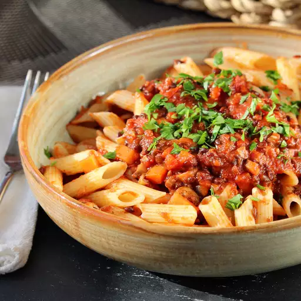

Bolognese

Delicious vegetarian sauce for pasta, so tasty, and as nice as a meat bolognese. It can also be served with potatoes.
It doesn’t take a lot of ingredients (or a lot of money) to make a classic Bolognese recipe. What it does take, though, is patience for the sauce to achieve the ideal authentic texture. You’re going to go low and slow—it’ll take around 3 hours, but most of that cook time is hands-off.
Bolognese sauce is heavenly and boy is the texture something to write home about! With some love and patience, this sauce will turn out to be a work of art and TOTALLY worth the time you put into it!
Ingredients
- 1 medium onion, chopped
- 1 celery stalk, chopped
- 1 small carrot, peeled, chopped
- 3 tbsp extra-virgin olive oil
- 1 lb ground beef chuck, patted dry Kosher salt
- 3 oz. thinly sliced pancetta, finely chopped
- 1 cup dry white wine
- 1/3 cup tomato paste
- 1 bay leaf
- 2 cups handmade chicken stock or low-sodium chicken broth
- 1 cup whole milk
- 1 lb. fresh tagliatelle or pappardelle
Steps
- Pulse onion, celery, and carrot in a food processor until very finely chopped. Transfer to a small bowl.
- Heat oil in a Dutch oven or other large pot over medium. Break beef into small clumps (about 1½") and add to pot; season lightly with salt. Cook, stirring occasionally but not breaking meat apart, until beef is lightly browned but not crisp, 6–8 minutes. It may be gray in spots (that’s okay!) and still a little pink in the center. Using a slotted spoon, transfer beef to a medium bowl..
- Wipe out pot. Cook pancetta in pot over medium heat, stirring occasionally, until pancetta has released some of its fat and is crisp, 6–8 minutes. Add onion mixture to pot and cook, stirring occasionally, until vegetables are very soft and beginning to stick to surface, 6–8 minutes.
- Return beef to pot and pour in wine. Reduce heat to medium-low and cook, smashing down on beef with a wooden spoon, until wine is evaporated, surface of pot is almost dry, and meat is finely ground, 12–15 minutes. (The meat should be reduced to what looks like little bits. It takes a bit of effort, but you can take breaks.) Add tomato paste, bay leaf, and nutmeg and cook, stirring occasionally and still pressing down on meat, until tomato paste is slightly darkened, about 5 minutes.
- Pour stock and milk into pot; add a pinch of salt. Reduce heat to the lowest setting and cook, uncovered and stirring occasionally, until meat is very, very tender, 2–2½ hours. There shouldn’t be any rapid bubbles at this stage. Instead, the sauce should release the occasional small bubble or two. When finished, the sauce should have the texture of and look like a sloppy joe mixture. If the liquid reduces before the meat is completely tender, add an extra ½ cup stock and continue cooking. Discard bay leaf. Taste sauce and adjust seasoning with salt; keep warm.
- Cook pasta in a large pot of boiling salted water. If using fresh pasta, cook about 3 minutes. If using dry, cook until very al dente, about 2 minutes less than package directions.
- Using tongs, transfer pasta to pot with sauce. Add 1 cup pasta cooking liquid and ½ cup Parmesan. Increase heat to medium, bring to a simmer, and cook, tossing constantly, until pasta is al dente and liquid is slightly thickened, about 2 minutes.
- Transfer pasta to a platter and top with more Parmesan.